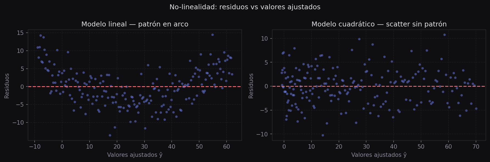
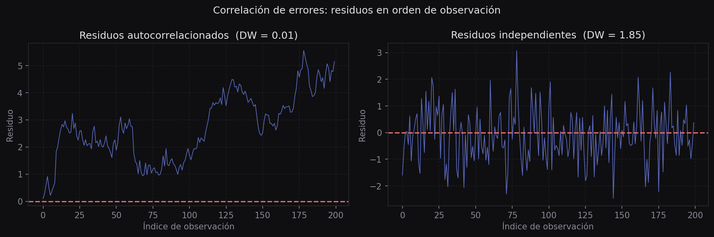
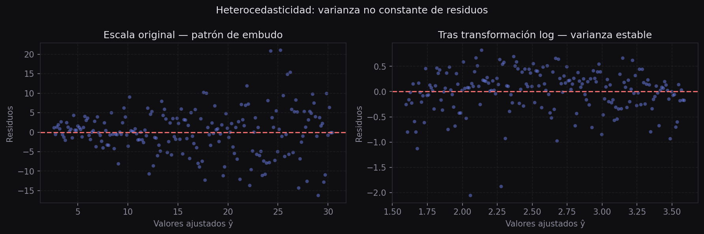
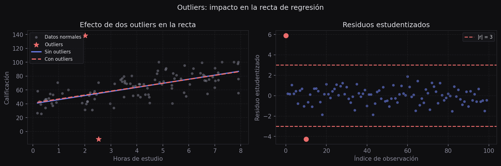
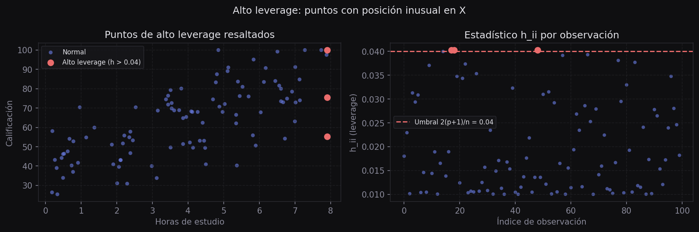
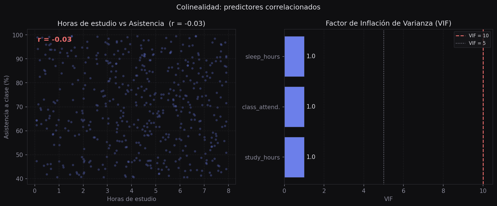

Problemas Potenciales en Regresión Lineal
Ajustar un modelo OLS no garantiza que sea válido. Antes de interpretar coeficientes o hacer predicciones, hay que verificar que los datos no violen los supuestos del modelo. Este módulo cubre los seis problemas clásicos y las herramientas diagnósticas para detectarlos.
Introducción
En el módulo 06 vimos cómo usar statsmodels para ajustar un modelo OLS e interpretar su summary. Pero ese ajuste descansa sobre cuatro supuestos que el modelo no verifica por sí solo: la relación entre predictores y respuesta debe ser lineal, los errores deben ser independientes, su varianza debe ser constante (homocedasticidad), y deben seguir una distribución aproximadamente normal.
Cuando alguno de estos supuestos falla, los coeficientes y sus p-valores dejan de ser confiables. Este módulo presenta los seis problemas más comunes y las gráficas y estadísticos que permiten detectarlos antes de usar el modelo.
Linealidad: \( E[y \mid x] = \beta_0 + \beta_1 x \). La relación es lineal en los parámetros.
Independencia: Los errores \( \varepsilon_i \) no están correlacionados entre sí.
Homocedasticidad: \( \text{Var}(\varepsilon_i) = \sigma^2 \) es constante para toda observación.
Normalidad: Los errores siguen una distribución normal (necesario para inferencia exacta).
1. No-linealidad de la relación
Imagina intentar medir la distancia de una carretera curva con una regla recta: en cada curva subestimarás la distancia real. Lo mismo pasa cuando ajustas una recta sobre datos que siguen una curva — el modelo sistemáticamente se equivoca en los extremos y acierta solo en el centro.
El problema no siempre es visible en la gráfica original de datos. La herramienta más directa para detectarlo es la gráfica de residuos vs valores ajustados.
Gráfica de residuos vs valores ajustados
Si la relación es lineal, los residuos deben dispersarse aleatoriamente alrededor de cero sin ningún patrón. Si ves una curva en arco o en U, el modelo no está capturando toda la señal.
import numpy as np
import statsmodels.api as sm
# Ajuste lineal simple
X = sm.add_constant(study_hours)
modelo_lineal = sm.OLS(exam_score, X).fit()
# Ajuste cuadrático (agrega x²)
X_poly = sm.add_constant(np.column_stack([study_hours, study_hours**2]))
modelo_poly = sm.OLS(exam_score, X_poly).fit()
print(f"R² lineal: {modelo_lineal.rsquared:.3f}")
print(f"R² cuadrático: {modelo_poly.rsquared:.3f}")
Si ves un patrón en la gráfica de residuos vs ajustados, agrega términos polinómicos (\( x^2, x^3 \)) o transforma la variable predictora (por ejemplo, \( \sqrt{x} \) o \( \ln(x) \)).
Ejemplo Detectar y corregir no-linealidad en el dataset del curso
Ajustamos un modelo lineal y uno cuadrático sobre los mismos datos y comparamos el R² y la gráfica de residuos:
import pandas as pd
import numpy as np
import statsmodels.api as sm
df = pd.read_csv("data/csvs/examenes.csv").sample(200, random_state=42)
x = df["study_hours"]
y = df["exam_score"]
# Modelo lineal
X1 = sm.add_constant(x)
m1 = sm.OLS(y, X1).fit()
# Modelo cuadrático
X2 = sm.add_constant(np.column_stack([x, x**2]))
m2 = sm.OLS(y, X2).fit()
print(f"R² lineal: {m1.rsquared:.3f}")
print(f"R² cuadrático: {m2.rsquared:.3f}")
# La gráfica de residuos del modelo lineal mostrará arco si hay curvatura.
# Si el R² cuadrático mejora notablemente (p.ej. de 0.45 a 0.68),
# la curva aporta señal real, no solo ruido.Si los residuos del modelo cuadrático se dispersan sin patrón alrededor de cero, la curvatura quedó capturada. Un salto grande de R² confirma que el modelo lineal era insuficiente.
2. Correlación de errores
Imagina registrar la temperatura diaria durante un mes. La temperatura de hoy te dice algo sobre la de mañana — los errores del modelo no son independientes, están correlacionados en el tiempo. Esto ocurre principalmente en series de tiempo, datos con estructura espacial o mediciones repetidas sobre los mismos sujetos.
Cuando los errores están correlacionados, los errores estándar del modelo se subestiman. Los p-valores parecen más significativos de lo que realmente son, y los intervalos de confianza son más estrechos de lo correcto.
El estadístico Durbin-Watson mide si los residuos consecutivos están correlacionados:
from statsmodels.stats.stattools import durbin_watson
# Ordenar datos por una variable temporal o de orden natural
df_sorted = df.sort_values("class_attendance").reset_index(drop=True)
X_s = sm.add_constant(df_sorted["study_hours"])
modelo_s = sm.OLS(df_sorted["exam_score"], X_s).fit()
dw = durbin_watson(modelo_s.resid)
print(f"Durbin-Watson: {dw:.3f}")
# 2.0 → sin correlación | <1.5 o >2.5 → alerta
DW varía entre 0 y 4. DW ≈ 2 indica ausencia de autocorrelación. DW < 1.5 sugiere autocorrelación positiva (residuos consecutivos del mismo signo). DW > 2.5 sugiere autocorrelación negativa.
Agregar el tiempo como predictor: incluir un índice de orden temporal \( t \) en el modelo suele absorber parte de la autocorrelación.
Incluir rezagos: agregar la versión retrasada de la respuesta (\( y_{t-1} \)) como predictor captura la dependencia directa entre observaciones consecutivas.
Modelos de series de tiempo: si la autocorrelación es estructural, usar ARIMA o modelos de efectos mixtos es la solución de fondo.
Ejemplo Corregir autocorrelación incluyendo el orden temporal
Comparamos el estadístico DW antes y después de incluir un índice temporal como predictor adicional:
import pandas as pd
import numpy as np
import statsmodels.api as sm
from statsmodels.stats.stattools import durbin_watson
df = pd.read_csv("data/csvs/examenes.csv").sample(200, random_state=42)
df_sorted = df.sort_values("class_attendance").reset_index(drop=True)
df_sorted["t"] = np.arange(len(df_sorted)) # índice temporal
# Modelo sin tiempo
X_base = sm.add_constant(df_sorted["study_hours"])
m_base = sm.OLS(df_sorted["exam_score"], X_base).fit()
dw_base = durbin_watson(m_base.resid)
# Modelo con tiempo como predictor adicional
X_t = sm.add_constant(df_sorted[["study_hours", "t"]])
m_t = sm.OLS(df_sorted["exam_score"], X_t).fit()
dw_t = durbin_watson(m_t.resid)
print(f"DW sin tiempo: {dw_base:.3f}")
print(f"DW con tiempo: {dw_t:.3f}")
# Si DW se acerca más a 2 al incluir el tiempo, la autocorrelación
# era en gran parte tendencia temporal capturada por ese predictor.3. Heterocedasticidad
Piensa en estimar cuánto tardarás en llegar al trabajo: si el tren está a 2 minutos, puedes predecirlo con mucha precisión. Si está a 2 horas, la incertidumbre es mucho mayor. Esa variabilidad que crece con el valor predicho es exactamente la heterocedasticidad: la varianza de los residuos no es constante.
En la gráfica de residuos vs valores ajustados, la heterocedasticidad aparece como un patrón de embudo — los residuos se ensanchan (o se estrechan) a medida que \( \hat{y} \) crece.
Además de la gráfica, el test de Breusch-Pagan contrasta formalmente si la varianza de los residuos depende de los predictores:
from statsmodels.stats.diagnostic import het_breuschpagan
modelo = sm.OLS(exam_score, sm.add_constant(study_hours)).fit()
lm, lm_pval, fstat, f_pval = het_breuschpagan(modelo.resid, modelo.model.exog)
print(f"Estadístico LM: {lm:.3f}")
print(f"p-valor: {lm_pval:.4f}")
# p < 0.05 → evidencia de heterocedasticidad
Transformación logarítmica
Cuando la variable respuesta es siempre positiva y su varianza crece con su magnitud, la transformación logarítmica suele corregir el problema. El modelo se ajusta sobre \( \ln(y) \) en lugar de \( y \):
import numpy as np
# Transformar la variable respuesta
y_log = np.log1p(exam_score) # log(1 + y) para evitar log(0)
modelo_log = sm.OLS(y_log, sm.add_constant(study_hours)).fit()
print(f"R² con log(y): {modelo_log.rsquared:.3f}")
# Los coeficientes ahora se interpretan como cambios porcentuales
b1 = modelo_log.params["study_hours"]
print(f"Un hora más de estudio → {b1*100:.1f}% de cambio en la calificación")Profundización Otras transformaciones para heterocedasticidad
La transformación logarítmica es la más común, pero existen otras alternativas según la forma del patrón:
- Raíz cuadrada \( \sqrt{y} \): cuando la varianza crece moderadamente con la media. Útil para conteos.
- Inversa \( 1/y \): cuando la varianza crece muy rápido con la media.
- Box-Cox: familia paramétrica que incluye log y raíz como casos especiales.
scipy.stats.boxcoxestima el parámetro \( \lambda \) óptimo automáticamente. - WLS (mínimos cuadrados ponderados): en lugar de transformar \( y \), asigna pesos inversamente proporcionales a la varianza estimada. Disponible en
sm.WLS.
Ejemplo Detectar y corregir heterocedasticidad en el dataset del curso
Aplicamos el test Breusch-Pagan antes y después de transformar la respuesta con logaritmo:
import pandas as pd
import numpy as np
import statsmodels.api as sm
from statsmodels.stats.diagnostic import het_breuschpagan
df = pd.read_csv("data/csvs/examenes.csv").sample(200, random_state=42)
X = sm.add_constant(df["study_hours"])
y = df["exam_score"]
# Modelo original
modelo = sm.OLS(y, X).fit()
_, pval, _, _ = het_breuschpagan(modelo.resid, modelo.model.exog)
print(f"Breusch-Pagan p-valor (original): {pval:.4f}")
# Con transformación logarítmica
y_log = np.log1p(y)
modelo_log = sm.OLS(y_log, X).fit()
_, pval_log, _, _ = het_breuschpagan(modelo_log.resid, modelo_log.model.exog)
print(f"Breusch-Pagan p-valor (log y): {pval_log:.4f}")
# Si p sube sobre 0.05 después del log, la transformación estabilizó la varianza.Un p-valor mayor a 0.05 tras la transformación indica que ya no hay evidencia estadística de heterocedasticidad.
4. Outliers
Un outlier es una observación cuya respuesta \( y_i \) es inusualmente grande o pequeña dado su valor de \( x \). Como un testigo deshonesto en un juicio: una sola declaración falsa puede torcer todo el veredicto. En regresión, un outlier puede desplazar significativamente la recta ajustada y distorsionar los coeficientes.
# Comparar coeficientes con y sin outliers
y_limpio = exam_score.copy()
y_mod = exam_score.copy()
y_mod[0] = exam_score.mean() + 4 * exam_score.std() # outlier alto
y_mod[10] = exam_score.mean() - 4 * exam_score.std() # outlier bajo
m_limpio = sm.OLS(y_limpio, sm.add_constant(study_hours)).fit()
m_out = sm.OLS(y_mod, sm.add_constant(study_hours)).fit()
print(f"Pendiente sin outliers: {m_limpio.params[1]:.3f}")
print(f"Pendiente con outliers: {m_out.params[1]:.3f}")
Residuos estudentizados
El residuo ordinario \( e_i = y_i - \hat{y}_i \) no tiene escala fija, lo que dificulta comparar observaciones. Los residuos estudentizados normalizan cada residuo por su error estándar, teniendo en cuenta también el leverage de la observación:
donde \( s \) es la desviación estándar de los residuos y \( h_{ii} \) es el leverage de la observación (definido en la sección siguiente). Una observación con \( |r_i| > 3 \) es candidata a outlier.
from statsmodels.stats.outliers_influence import OLSInfluence
modelo = sm.OLS(exam_score, sm.add_constant(study_hours)).fit()
influencia = OLSInfluence(modelo)
r_stud = influencia.resid_studentized_external
outliers = np.where(np.abs(r_stud) > 3)[0]
print(f"Observaciones con |r_i| > 3: {len(outliers)}")
print("Índices:", outliers)Ejemplo Detectar outliers en el dataset del curso
import pandas as pd
import statsmodels.api as sm
import numpy as np
from statsmodels.stats.outliers_influence import OLSInfluence
df = pd.read_csv("data/csvs/examenes.csv").sample(200, random_state=42)
X = sm.add_constant(df["study_hours"])
y = df["exam_score"]
modelo = sm.OLS(y, X).fit()
r_stud = OLSInfluence(modelo).resid_studentized_external
print(f"Total de observaciones: {len(y)}")
print(f"Outliers (|r_i| > 3): {(np.abs(r_stud) > 3).sum()}")
print(f"Outliers (|r_i| > 2): {(np.abs(r_stud) > 2).sum()}")
# Con datos reales, es normal tener algunos puntos con |r_i| > 2Investigar primero: verificar si es un error de captura o una observación legítima.
Error de datos: corregir o eliminar el registro con documentación del motivo.
Observación real: mantenerla y reportarla. Considera usar regresión robusta (sm.RLM), que reduce automáticamente el peso de puntos extremos sin eliminarlos.
No eliminar outliers solo porque son inconvenientes: a veces representan el fenómeno más interesante del conjunto.
5. Puntos de alto leverage
Imagina un balancín: aunque alguien en el centro no afecte mucho el equilibrio, una persona en el extremo tiene un poder desproporcionado sobre el balance, aunque no sea muy pesada. Un punto de alto leverage tiene un valor de \( x \) muy inusual — lejos de la media de los predictores — y por eso tiene una influencia desproporcionada en la posición de la recta.
Es importante distinguir los dos conceptos: un outlier tiene una \( y \) inusual dado su \( x \). Un punto de alto leverage tiene una \( x \) inusual. Un punto puede ser ambas cosas a la vez, y en ese caso su impacto es máximo.
Para la regresión simple, el leverage de la observación \( i \) es:
El promedio de todos los \( h_{ii} \) es siempre \( (p+1)/n \), donde \( p \) es el número de predictores. Una regla práctica marca como "alto leverage" a cualquier observación con \( h_{ii} > 2(p+1)/n \).
La matriz hat y el estadístico de leverage
from statsmodels.stats.outliers_influence import OLSInfluence
modelo = sm.OLS(exam_score, sm.add_constant(study_hours)).fit()
influencia = OLSInfluence(modelo)
h = influencia.hat_matrix_diag
p = 1 # número de predictores
n = len(exam_score)
umbral = 2 * (p + 1) / n
alto_leverage = h > umbral
print(f"Umbral de leverage: {umbral:.3f}")
print(f"Puntos con alto leverage: {alto_leverage.sum()}")
Profundización Distancia de Cook: outlier y leverage juntos
La distancia de Cook combina en un solo número el efecto de outlier y el de leverage. Mide cuánto cambiarían todos los coeficientes si se eliminara la observación \( i \). Un valor de Cook \( D_i > 1 \) es motivo de revisión.
cook_d, p_vals = OLSInfluence(modelo).cooks_distance
obs_influyentes = np.where(cook_d > 1)[0]
print(f"Observaciones con Cook D > 1: {len(obs_influyentes)}")Revisar el dato: confirmar que el valor inusual de \( x \) es real y no un error de registro.
Combinar con Cook: un punto de alto leverage solo es preocupante si también tiene residuo grande. La distancia de Cook \( D_i \) combina ambos efectos — prioriza los puntos con \( D_i > 1 \).
Regresión robusta: sm.RLM reduce automáticamente el peso de puntos influyentes sin eliminarlos. Si la pendiente cambia mucho entre OLS y RLM, los puntos de alto leverage están distorsionando el modelo.
Ejemplo Identificar puntos influyentes y comparar con regresión robusta
Detectamos puntos con alto leverage y distancia de Cook elevada, luego comparamos OLS contra RLM para ver si están distorsionando los coeficientes:
import pandas as pd
import statsmodels.api as sm
import numpy as np
from statsmodels.stats.outliers_influence import OLSInfluence
df = pd.read_csv("data/csvs/examenes.csv").sample(200, random_state=42)
X = sm.add_constant(df["study_hours"])
y = df["exam_score"]
modelo = sm.OLS(y, X).fit()
infl = OLSInfluence(modelo)
h = infl.hat_matrix_diag
cook_d, _ = infl.cooks_distance
p, n = 1, len(y)
umbral_h = 2 * (p + 1) / n
print(f"Puntos con alto leverage (h > {umbral_h:.3f}): {(h > umbral_h).sum()}")
print(f"De esos, con Cook D > 0.5: {((h > umbral_h) & (cook_d > 0.5)).sum()}")
# Comparar OLS vs regresión robusta (RLM)
modelo_robusto = sm.RLM(y, X).fit()
print(f"\nPendiente OLS: {modelo.params['study_hours']:.3f}")
print(f"Pendiente robusta: {modelo_robusto.params['study_hours']:.3f}")
# Una diferencia grande indica que puntos influyentes están sesgando OLS.6. Colinealidad
Imagina intentar estimar por separado el peso de dos personas que siempre viajan juntas: nunca las ves una sin la otra, así que es imposible saber cuánto pesa cada una individualmente. Lo mismo pasa cuando dos predictores están altamente correlacionados — el modelo no puede separar el efecto de cada uno.
La colinealidad no sesga las predicciones del modelo, pero sí infla los errores estándar de los coeficientes. Esto hace que los intervalos de confianza sean muy anchos y que los p-valores sean poco confiables: un predictor importante puede aparecer como "no significativo" simplemente porque comparte información con otro.
import statsmodels.api as sm
# Modelo con predictores correlacionados
X_multi = sm.add_constant(df[["study_hours", "class_attendance", "sleep_hours"]])
modelo_multi = sm.OLS(df["exam_score"], X_multi).fit()
print(modelo_multi.summary())
# Observar: errores estándar grandes → t-estadísticos pequeños → p-valores altos
donde \( R_j^2 \) es el coeficiente de determinación de la regresión del predictor \( j \) sobre todos los demás predictores. Si \( R_j^2 \) es alto (el predictor \( j \) se puede predecir bien con los otros), el VIF es grande.
Factor de Inflación de Varianza (VIF)
VIF < 5: colinealidad aceptable, sin preocupación.
VIF 5–10: colinealidad moderada — revisar el modelo.
VIF > 10: colinealidad severa — es necesario actuar.
from statsmodels.stats.outliers_influence import variance_inflation_factor
import numpy as np
vars_pred = ["study_hours", "class_attendance", "sleep_hours"]
X_vif = sm.add_constant(df[vars_pred].values)
for i, var in enumerate(vars_pred):
vif = variance_inflation_factor(X_vif, i + 1) # +1 para saltar la constante
print(f"VIF {var:20s}: {vif:.2f}")Ejemplo Eliminar una variable colineal y comparar errores estándar
Si dos predictores tienen VIF alto, la solución más directa es eliminar uno de ellos. Compara los errores estándar antes y después:
# Con colinealidad: study_hours y class_attendance correlacionados
X_col = sm.add_constant(df[["study_hours", "class_attendance"]])
m_col = sm.OLS(df["exam_score"], X_col).fit()
print("Con colinealidad:")
print(m_col.bse) # errores estándar de cada coeficiente
# Sin colinealidad: eliminar class_attendance
X_sin = sm.add_constant(df[["study_hours"]])
m_sin = sm.OLS(df["exam_score"], X_sin).fit()
print("\nSin colinealidad:")
print(m_sin.bse) # errores estándar más pequeños → coeficientes más establesResumen diagnóstico
Antes de interpretar los coeficientes de cualquier modelo OLS o usarlo en producción, aplica esta tabla de verificación:
| Problema | Síntoma en los datos | Herramienta de diagnóstico | Solución típica |
|---|---|---|---|
| No-linealidad | Patrón en arco en residuos vs ajustados | Gráfica de residuos vs \( \hat{y} \) | Términos polinómicos, transformar \( x \) |
| Correlación de errores | Residuos con tendencia en el tiempo | Durbin-Watson, gráfica en orden | Modelos de series de tiempo, agregar el tiempo como predictor |
| Heterocedasticidad | Residuos en forma de embudo | Gráfica de residuos vs \( \hat{y} \) | Transformación log, raíz cuadrada, WLS |
| Outliers | Residuos estudentizados con \( |r_i| > 3 \) | OLSInfluence.resid_studentized_external |
Revisar el dato; eliminar solo con justificación |
| Alto leverage | \( h_{ii} > 2(p+1)/n \) | OLSInfluence.hat_matrix_diag |
Revisar el dato; considerar modelos robustos |
| Colinealidad | VIF > 10, errores estándar inflados | variance_inflation_factor |
Eliminar una variable, combinar predictores, usar Ridge |
Estos diagnósticos no son pasos opcionales. Aplicarlos antes de interpretar coeficientes o desplegar un modelo es parte del flujo estándar de cualquier análisis de regresión serio. Un modelo que pasa todas las pruebas diagnósticas tiene resultados confiables; uno que las falla, no.